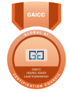

Service en vedette
Conseils en gouvernance de l'IA.
Conseils en gouvernance de l'IA, bâtis sur la norme ISO/IEC 42001 : pour les entreprises qui ont besoin de mises en œuvre d'IA qu'elles peuvent assumer pleinement. Menés par une Lead Implementer certifiée, pas un cadre générique.
L'IA fait déjà partie de votre entreprise. Votre gouvernance suit-elle le rythme?
La gouvernance n'est pas un seul document. C'est la façon dont votre organisation suit l'usage de l'IA, attribue les responsabilités, gère le risque, et peut expliquer une décision après coup.
Usage de l'IA
Ce qui est réellement utilisé, dans toutes les équipes, pas seulement les outils approuvés par les TI.
Responsabilité
Qui est propriétaire de chaque cas d'usage de l'IA, et qui est imputable si quelque chose tourne mal.
Risque
Ce qui pourrait réellement mal tourner, évalué honnêtement, pas présumé absent.
Contrôles
Les garde-fous qui maintiennent l'usage de l'IA dans ce qui est réellement acceptable.
Preuves
Un dossier de ce qui a été considéré et pourquoi, pas un souvenir de ça.
Révision
Comment la gouvernance suit le rythme à mesure que votre usage de l'IA, et les normes qui l'entourent, continuent de changer.

Pascale est Lead Implementer certifiée ISO/IEC 42001
La norme ISO/IEC 42001 est la norme internationale pour les systèmes de gestion de l'IA. Pourquoi c'est important : la gouvernance que vous obtenez est évaluée par rapport à une norme mondiale reconnue, pas une liste de vérification improvisée pour l'occasion.
Ce que ça vous apporte réellement
Trois raisons pour lesquelles la gouvernance est un investissement, pas un coût supplémentaire.
Des décisions d'IA que vous pouvez assumer pleinement
La plupart des déploiements d'IA n'ont toujours pas de gouvernance mature en place. Une bonne gouvernance rend les décisions d'IA explicables : ce qui a été considéré, qui était responsable, quels contrôles ont été appliqués, et pourquoi une décision a été prise, des preuves que vous pouvez assumer devant votre conseil, vos clients, ou un régulateur.
Prenez de l'expansion sans tout reconstruire plus tard
Une gouvernance intégrée dès le départ évite d'avoir à interrompre, retravailler, ou démanteler vos systèmes d'IA quand la réglementation se resserre ou que vous entrez dans un nouveau marché réglementé. Vous croissez vers de nouveaux cas d'usage au lieu d'accumuler une dette que vous devrez rembourser éventuellement.
Un atout quand on vous le demande
Une gouvernance de l'IA documentée revient de plus en plus dans les appels d'offres, les contrats d'entreprise et les évaluations de partenaires. Le travail de gouvernance déjà fait devient une preuve dès que cette question est posée, pas quelque chose à produire dans l'urgence.
Ce qui est inclus
Quatre volets, adaptés à ce dont vous avez réellement besoin, voir comment la portée s'adapte.
Bilan de préparation en gouvernance
Un regard structuré sur votre usage actuel de l'IA, vos responsabilités et vos lacunes, évalué par rapport à la norme ISO/IEC 42001, pas une liste de vérification générique étirée pour convenir.
Cadre de gouvernance de l'IA
Des politiques, rôles, processus décisionnels et contrôles de risque pratiques, conçus autour de la façon dont votre organisation utilise réellement l'IA, pas un cartable d'entreprise que personne dans votre équipe ne lira.
Accompagnement à la mise en œuvre
Un travail pratique avec votre équipe pour mettre la gouvernance en pratique, pas un ensemble de documents remis et laissés là.
Soutien continu à la gouvernance
Des révisions périodiques pour garder la gouvernance à jour à mesure que votre usage de l'IA, la technologie et l'environnement réglementaire évoluent.
Ce service pourrait vous convenir si
Une façon rapide de vous auto-évaluer avant de poursuivre votre lecture.
Vous utilisez déjà l'IA dans votre organisation
Vous intégrez l'IA à vos produits ou services
Vous développez des solutions activées par l'IA
Des clients ou partenaires vous questionnent sur vos pratiques responsables en IA
Vous vous préparez à des exigences d'approvisionnement ou réglementaires
Votre usage de l'IA grandit sans structure de gouvernance formelle
Foire aux questions
Les questions qui reviennent avant qu'on nous contacte.
Est-ce que c'est pour nous?
Qu'est-ce que les Conseils en gouvernance de l'IA?
Les Conseils en gouvernance de l'IA vous aident à établir les politiques, processus, rôles et preuves nécessaires pour utiliser l'IA de façon responsable et cohérente, en utilisant la norme ISO/IEC 42001 comme fondation, adaptée à la taille de votre organisation, à votre usage de l'IA et à votre profil de risque. Ce n'est pas un document de conformité qu'on classe et qu'on oublie; c'est un système fonctionnel pour la façon dont les décisions liées à l'IA sont réellement prises et révisées.
À qui ce service s'adresse-t-il?
Aux organisations qui utilisent déjà l'IA, qui l'intègrent à leurs opérations, ou qui développent des produits activés par l'IA, et de plus en plus, aux organisations qui doivent démontrer des pratiques responsables en IA à leurs clients, partenaires ou dirigeants, ou qui se préparent à des exigences réglementaires ou d'approvisionnement plus strictes. Vous n'avez pas besoin d'être une grande entreprise : le cadre s'adapte aussi facilement à la baisse qu'à la hausse.
En quoi est-ce différent d'une politique sur l'IA ou d'une évaluation des risques?
Une politique sur l'IA dit aux gens ce qu'ils devraient ou ne devraient pas faire. Une évaluation des risques identifie le risque à un moment précis. La gouvernance de l'IA relie ces éléments en un système continu : responsabilités, droits de décision, contrôles, documentation, surveillance et révision, pour qu'une politique rédigée par votre équipe juridique ne reste pas déconnectée de la façon dont les décisions se prennent réellement.
Devons-nous viser la certification ISO/IEC 42001?
Non. Vous pouvez utiliser la norme ISO/IEC 42001 comme cadre de gouvernance pratique sans jamais viser la certification formelle, c'est ce que fait la plupart de notre clientèle. Cebean offre des services-conseils et un accompagnement à la mise en œuvre basés sur la norme; la certification elle-même est délivrée par un organisme de certification indépendant, et là où c'est un objectif futur, nous pouvons vous aider à vous y préparer.
Nous utilisons déjà l'IA. Par où commencer?
C'est un point de départ courant, pas une situation inhabituelle. Vous n'avez pas besoin d'arrêter d'utiliser l'IA, ni d'avoir tout clarifié, avant de faire appel à nous. Nous commençons par comprendre ce qui est déjà utilisé, où se trouve actuellement la responsabilité, et quelle gouvernance, s'il y en a une, existe déjà. À partir de là, nous identifions les lacunes les plus prioritaires et bâtissons à partir d'elles.
Qu'obtiendrions-nous réellement?
Qu'est-ce que Cebean livre concrètement?
Quatre choses, adaptées à vos besoins : un bilan de préparation en gouvernance, un cadre adapté à votre entreprise, un accompagnement pratique à la mise en œuvre, et un soutien continu à la gouvernance à mesure que votre usage de l'IA grandit. Voir le détail complet dans Ce qui est inclus ci-dessus.
Comment se déroule le mandat?
Le même processus adapté derrière chaque mandat Cebean : Évaluer, Recommander, Rechercher et proposer, et Diriger la mise en œuvre, voir Comment la portée s'adapte pour le portrait complet. La plupart des mandats de gouvernance n'ont besoin que des deux ou trois premières étapes; un plus petit nombre vont jusqu'à la mise en œuvre complète.
Comment l'approche s'adapte-t-elle à notre organisation?
La portée est déterminée par votre usage réel de l'IA, votre environnement de gouvernance existant et vos objectifs, pas par un gabarit fixe. L'objectif n'est pas de créer de la bureaucratie; c'est d'établir une gouvernance suffisamment proportionnée pour être réellement utilisée.
Que signifie la norme ISO/IEC 42001 ici?
Pourquoi la certification Lead Implementer ISO/IEC 42001 de Cebean est-elle importante?
Ça signifie que le cadre que vous obtenez s'appuie sur la véritable norme internationale pour les systèmes de gestion de l'IA, mené par une personne certifiée pour la mettre en œuvre, pas un cadre interne improvisé pour l'occasion. Vérifiez le titre directement sur Credly.
Vous ne savez pas encore de combien de gouvernance vous avez besoin?
C'est exactement à ça que sert un bilan de préparation. Aucune proposition requise pour le savoir.
Réservez votre consultation gratuite →